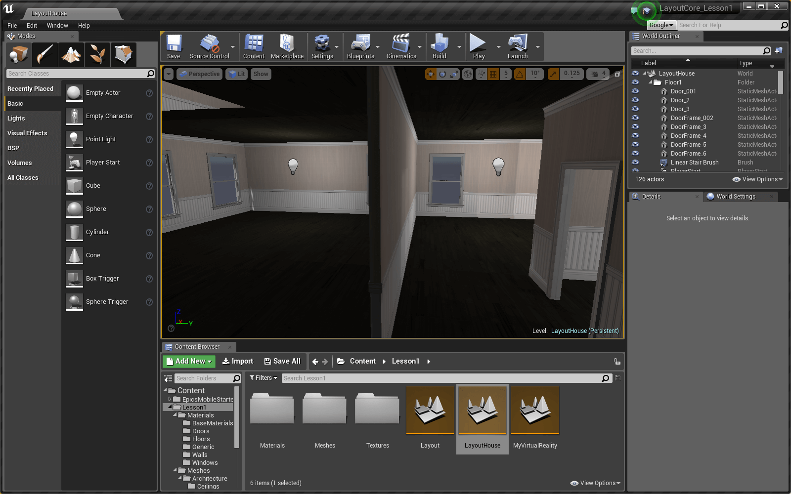
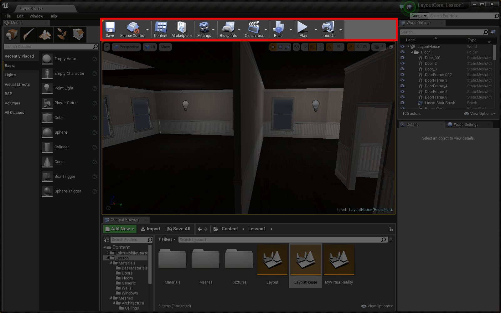
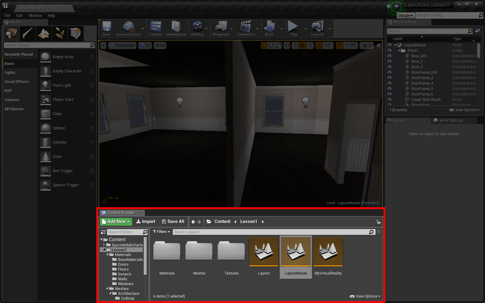
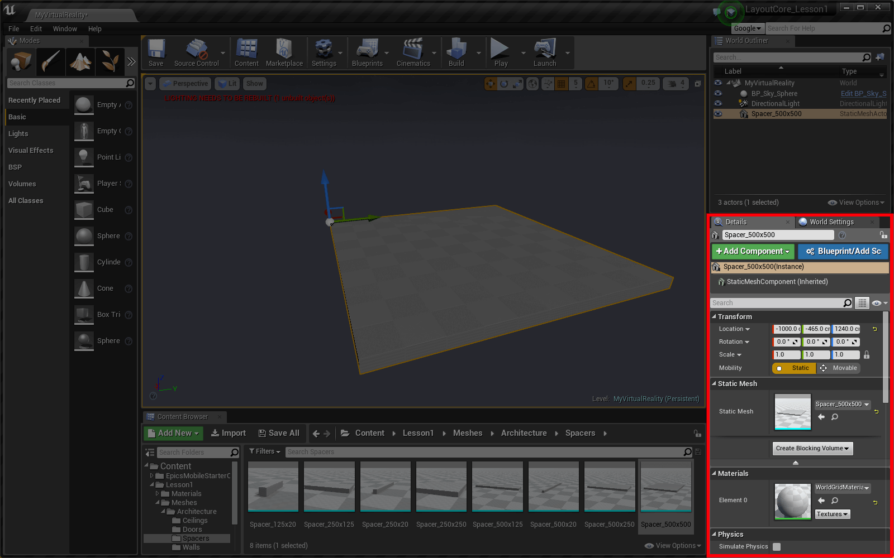
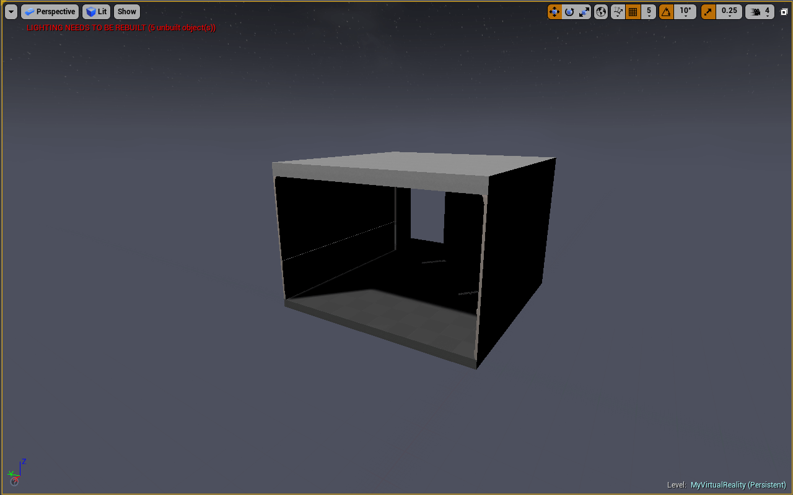
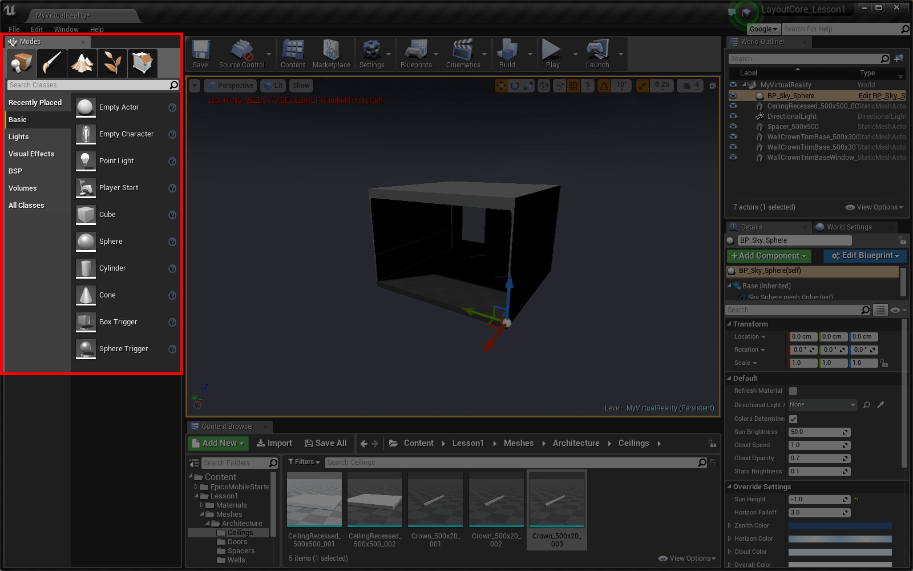
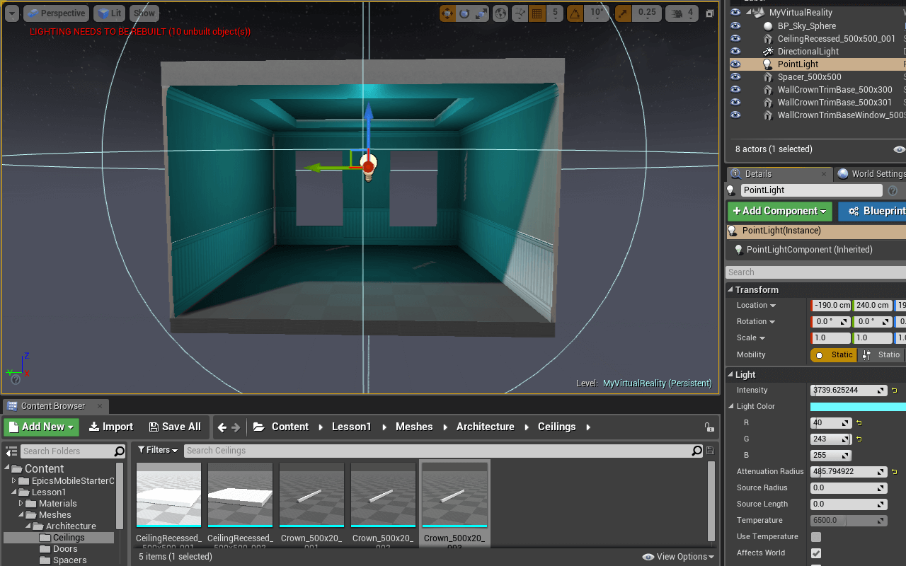
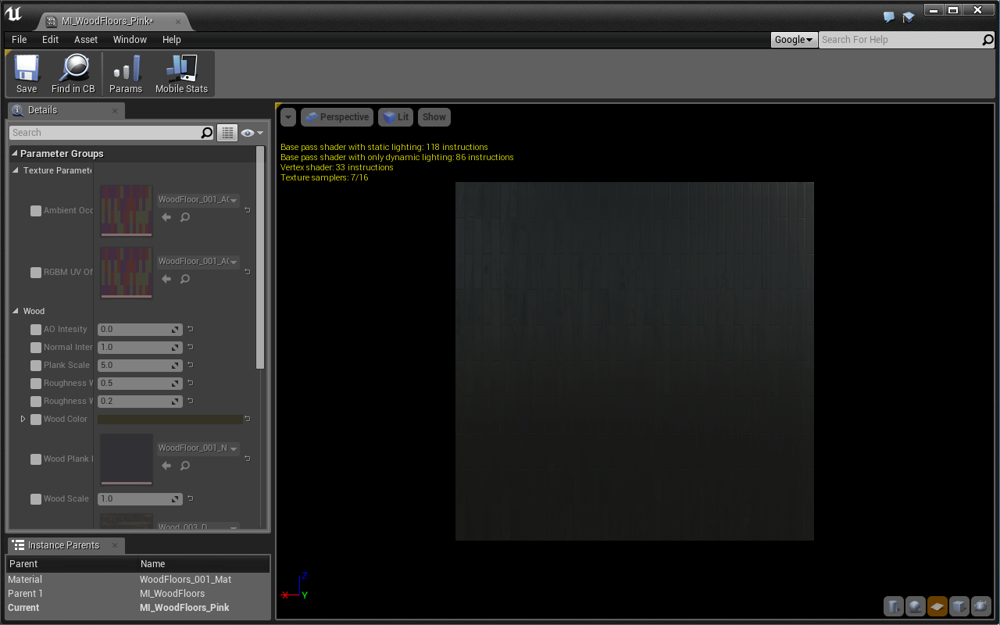
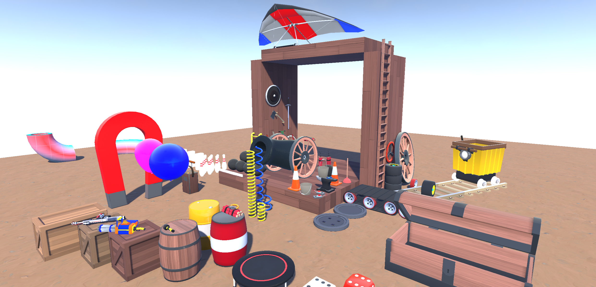

Download the Starter Project
Layout uses one Master Starter Project. If you’ve downloaded it recently, chances are you don’t need to re-download it.
This tutorial requires that you’ve downloaded the starter project as of 4/5/16:
- Click here to download the Layout Master starter project.
- Extract the zip folder.
- Open up the Layout_ToyBoxx.uproject and begin your adventure!
Woah! How does it feel to be inside a AAA game engine? Do you feel cool yet? Because you are. You’ve just begun your journey to becoming a Virtual Reality content creator.
After completing this tutorial, you will be familiar with some of the foundational components of Unreal Engine 4. You’ll also have the opportunity to experience your project in virtual reality. There’s a lot of new stuff in front of you, let’s jump right in!

Hover over an image to zoom in
This is the Level Editor. Here you’ll be able to create your worlds, browse your assets, and edit the actors in your level.
Actors are objects that can be placed in the world. They can be physical objects like a wall, moving objects like an AI controlled entity, or invisible objects like a player spawn point.
Above the Viewport is the Toolbar, which contains buttons for common commands in the editor.

If the VR Preview button is grayed out, it means your HMD is not set up properly. First make sure you followed all the Setup Steps. Then:
- Close UE4
- Unplug your HMD
- Plug in your HMD and make sure your computer recognizes it
- Open UE4
It’s time to put some actors in our level!
Remember, Actors are objects that can be placed in the world.
Beneath the Viewport is the Content Browser, which provides access to the project’s assets and files.

Let’s create our own room. In order to do that, let’s start in an empty level:
Great. Now we have some space to work with. Time to place some actors!
The Meshes folder contains a bunch of Static Meshes separated into folders. This project has a huge set of starter assets for you to play with later, but for our room, we’re going to stick to the InteriorArchViz assets.
Static Meshes are 3D Models that we can use in our world.
You just placed your first actor!
Now that we have a floor in our level, let’s position it at the origin of the world.
The Details panel in the lower right shows all the details of a selected actor.

Right now, we care about the Transform - Location, Rotation, and Scale - of the floor actor.
The Transform of an actor can also be edited using the 3D handles in the viewport:
As you can see, you can change the mode of the 3D handles in the upper right corner of the Viewport. The Location, Rotation, and Scale handle modes can also be selected with the W,E, and R keys respectively.
Challenge:
Place 3 walls and a ceiling in order to create an open room. Find the appropriate static meshes in the Walls and Ceilings folders.
Use this as an opportunity to get familiar with using the 3D handles and the Details panel for transforming actors.
Tips:
- Pay attention to the titles of the static meshes to know what type and size they are.
- Hold Alt and move a static mesh to move a copy of the mesh.
- Right-click a static mesh actor and hover the Transform sub-menu to get more transforming options.
- To delete an actor, select it and press the Delete key
Using some tips:
Here’s an example finished room:

Let’s add a light inside your room:
The Modes panel in the upper left allows access to different UE4 tools like texture painting, landscape creation, foliage placing, and geometry editing. The default Place mode, the mode we currently care about, allows you to place common actors - like lights - into your level.

To add a light:
Unreal Engine 4 features four different types of light: Point, Directional, Spot, and Sky.
Point Lights work much like a real world light bulb, emitting light equally in all directions from a single point in space.
Directional Lights simulate light emitted from a source that is infinitely far away. All shadows cast by this light will be parallel, making this the ideal choice for simulating sunlight.
Spot Lights emit light from a single point in a cone shape.
Sky Lights capture ambient light information from the far distances of the map.
Challenge:
Click on your new Point Light and edit some of its properties in the Details panel. The most fun properties to edit are:
- Light Color
- Intensity
- Attenuation Radius

Lighting for VR is tricky because it’s an expensive process, and VR requires optimal performance. For that reason, we should try to use static lighting wherever possible.
Static lighting is less expensive than Dynamic lighting because all the calculations are “baked” into the textures before the game even runs. In this way, our VR experience will not have to calculate any lighting for lights that are set to static. The draw back is that you can’t change a static light’s color or intensity mid-game. Static lights also don’t cast dynamic shadows.
To make your light static:
Once your light is in the correct place:
The engine will then calculate all the lighting and bake it into the scene.
Your lighting is now baked into the world! To demonstrate what this does, go ahead and move your light, or delete it all together. As you can see, the baked lighting still remains. The moment you press Build again, all old lighting data will be lost and the new placement of your light will be baked into the scene.
To summarize:
If you ever forget, hover any of the light’s Mobility options in the details panel for a helpful tooltip.
There are a couple pieces of our room that look like a checkerboard; most notably, our floor! Let’s change the way our floor looks by changing its material.
Great! There are all kinds of materials to choose from. You can find them in the Materials folder.
Many of our materials were made specifically for certain assets. For this reason, a door material won’t look good when placed on a floor mesh.
Use the folder structure to guarantee you’re using a proper material. You can also just use your eyeballs!
Challenge:
You’ll notice that the center of your ceiling also looks like a checkerboard. Change it’s material!
Note that the material you want to change is Element 1 on the ceiling static mesh actor.
Material Instances allow you to easily edit Layout’s pre-made materials. Let’s make our wood floor pink!

There are a lot of things you can edit here. We’re looking for the Wood Color parameter in the Details panel.
Make Material Instances as you wish! All of Layout’s provided materials are set up for simple and advanced customization.
Currently, whenever you press Play the experience starts from wherever the camera is in the world. This is fine when testing things out, but won’t work for a finished product. Instead, you’ll want to designate a place that the player spawns. This can be done with a Player Start actor!
That’s it! Now whenever you press Play you will start from the designated spawn point.
It’s possible that you want to place a Player Start, but still spawn at the current camera location during development. To do this:
- Open the dropdown next to the Play button
- Find the Spawn player at… section
- Select Current Camera Location
This section will briefly go over some of the Viewport tools available to you. These tools will make it easier to transform actors to perfection.
You can quickly change your view to get orthographic perspectives of your level using the button in the upper left:
Orthographic perspectives are great for perfectly placing actors in your level.
To get all 4 views at once, click the button in the upper right:
Adjusting your Snap Values is a great way to speed up your level creation process.
Changing Position Grid Snap Value allows you to move your actors in multiples of 1, 5, 10, 100, and more. This value is super helpful when constructing modular pieces like your house, and affects the initial placement of an actor as well.
Snap values exists for Rotation and Scale as well.
The UE4 Level Editor Documentation is full of additional information if there are parts of the Viewport or Level Editor you want to know more about.
To learn more advanced techniques for transforming actors, check out this UE4 Documentation.
Well done! You’re well on your way to becoming a UE4 master. Here’s what you already know how to do:
Your first assignment is to create 4 levels using any of the assets provided in the starter project. In each level, we want you to incorporate design strategies that take advantage of opportunities unique to virtual reality: scale, rotation, and translation. Place however many assets you need to demonstrate your mastery of each vr opportunity.
Your starter project comes with 4 starter maps that correspond to the 4 scenes you need to make. Find them in the Lesson1 > Homework folder. They’re named HW_Scale, HW_Rotation, HW_Translation, and HW_MyVR respectively.
Each starter level contains a few basic actors to set up the world with lighting and other important level components. We’ll cover these actors in the coming weeks. Your scenes might not make sense in the massive unending horizonscape. Consider alternative settings for each level.
The viewer won’t be able to move away from the Player Start position in these levels. Movement in virtual reality is a difficult design challenge that often requires novel approaches to navigation. We’ll have a chance to explore movement in the coming weeks, but we want you to focus on seated, static environments in this assignment.
Don’t miss the opportunity to familiarize yourself with all the assets we’ve created. This starter project has most of what you’ll be using throughout this course. Feel free to incorporate whatever you like.

Good luck and have fun!